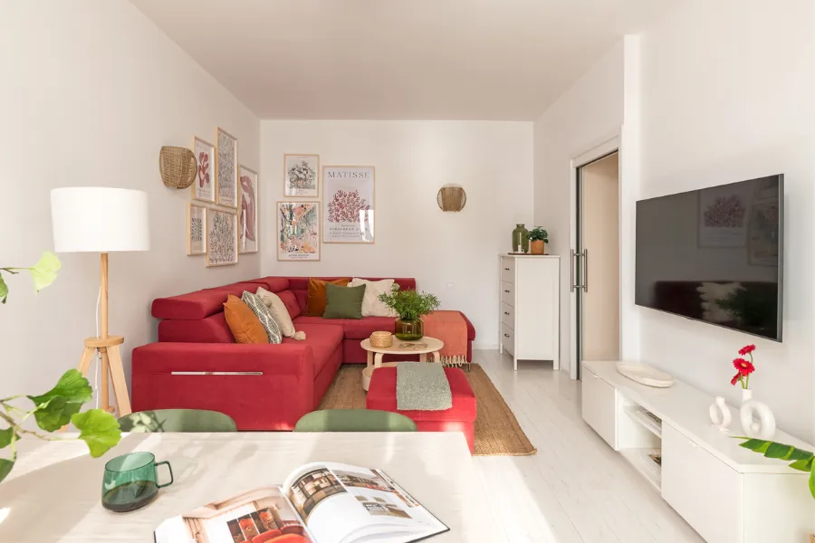
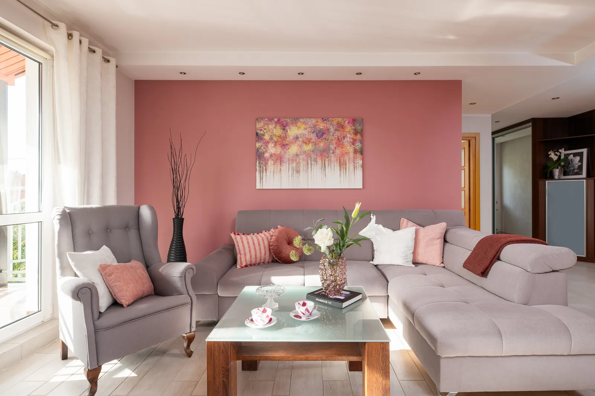
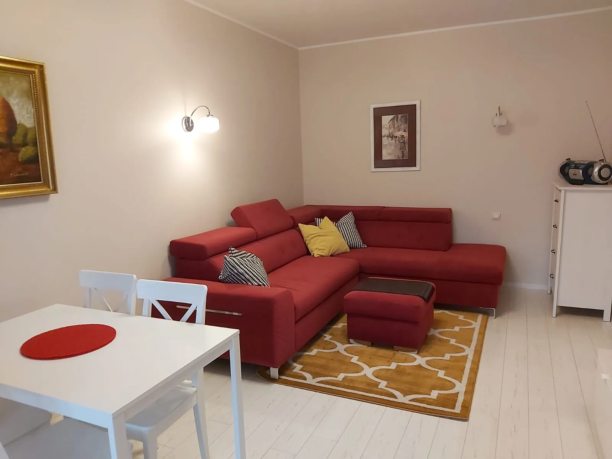
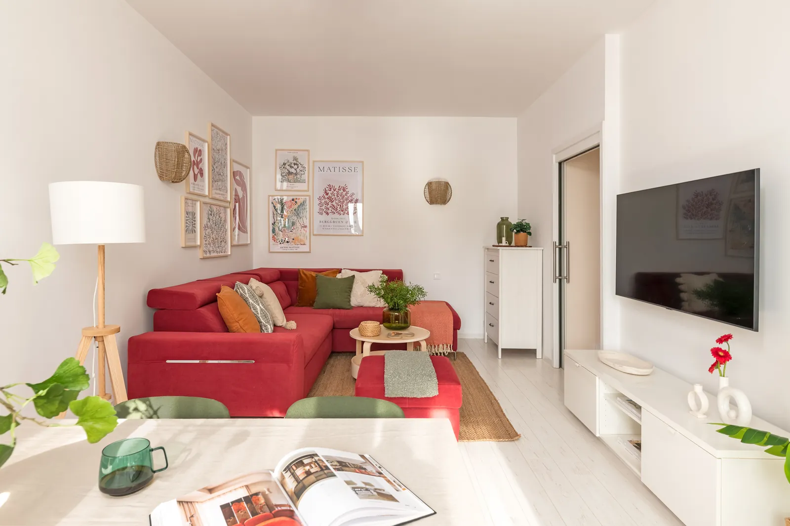
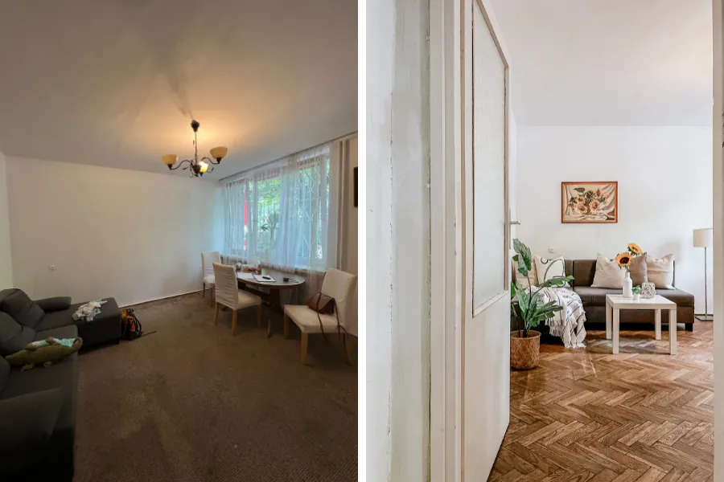
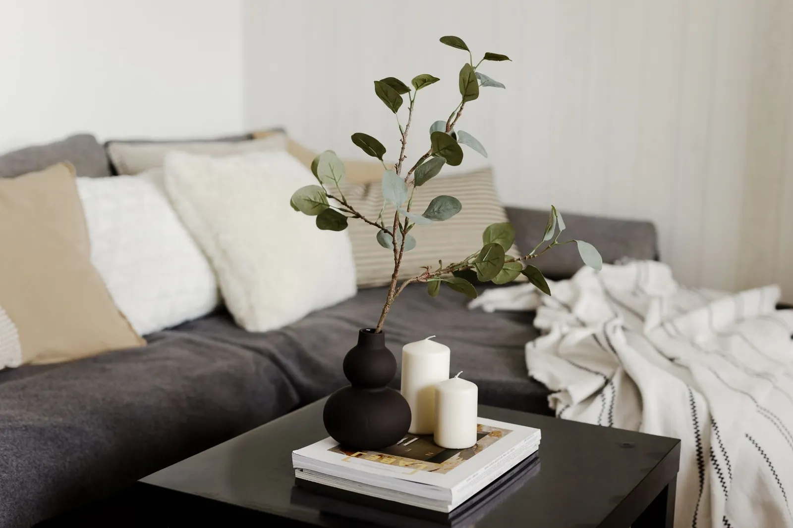
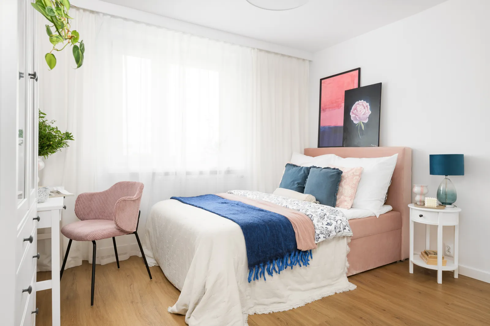

Sprzedaż mieszkania
Home staging: co to jest i jak działa?

Spis treści
Home staging to przygotowanie mieszkania lub domu do sprzedaży albo wynajmu tak, żeby już na pierwszym zdjęciu w ogłoszeniu przyciągało właściwych kupujących lub najemców. To nie remont i nie urządzanie wnętrza pod Twój gust. Celem jest szybsza transakcja w dobrej cenie, bez ratowania się kolejną obniżką.
Co to jest home staging?
Home staging to usługa przygotowania nieruchomości do transakcji. Zanim wystawisz ogłoszenie, ustalam, kto najpewniej kupi lub wynajmie Twoje mieszkanie. Do tej osoby dopasowuję wnętrze: co zostaje, co znika, co trzeba naprawić, odświeżyć i dokupić.
Na końcu mieszkanie dostaje profesjonalną sesję zdjęciową, bo od zdjęć zaczyna się każda decyzja. Kupujący ma przejść przez próg i od razu poczuć, że mógłby tu zamieszkać. Dlatego najprościej mówię, że home staging to zarządzanie pierwszym wrażeniem.
Metoda narodziła się w Stanach Zjednoczonych w 1972 roku, a za jej twórczynię uważa się Barb Schwarz. W Polsce rozwija się od kilku lat i coraz więcej osób traktuje ją jak marketing nieruchomości, a nie dekorowanie.
Sama przekonałam się o tym na własnym mieszkaniu. Po home stagingu sprzedałam je na pierwszej prezentacji, 30 minut po zakończeniu prac, i zyskaliśmy dodatkowe 37 500 zł.
Home staging a remont i metamorfoza wnętrz
Te trzy usługi często się mieszają, a mają inne cele. Najkrócej: remont zmienia stan techniczny, metamorfoza tworzy wnętrze dla Ciebie, a home staging przygotowuje je dla kogoś, kto dopiero ma się w nim zakochać.
| Home staging | Remont | Metamorfoza wnętrz | |
|---|---|---|---|
| Cel | Sprzedaż lub wynajem szybko i w dobrej cenie | Lepszy stan techniczny | Wnętrze, w którym dobrze Ci się mieszka |
| Dla kogo projektuję | Przyszły kupujący lub najemca | Zależy od celu | Ty i Twoi domownicy |
| Zakres | Porządek, drobne naprawy, odświeżenie, meble i dodatki, zdjęcia | Instalacje, podłogi, łazienka, kuchnia | Układ, kolory, meble, dodatki |
| Czas | Sama stylizacja zwykle tydzień lub dwa | Kilka tygodni i więcej | Zależy od zakresu |
Remont bywa częścią home stagingu, ale tylko wtedy, gdy się opłaca. Więcej o różnicach piszę we wpisie Home staging a metamorfoza wnętrz: która usługa jest dla Ciebie.
Dlaczego home staging działa
Kupujący najpierw przegląda zdjęcia, a dopiero potem umawia się na oglądanie. Jeśli na pierwszym zdjęciu widzi ciemny pokój, bałagan albo cudze pamiątki, przewija dalej. Jeśli widzi jasne, uporządkowane wnętrze, zatrzymuje się i dzwoni.
W Polsce nie ma niezależnych badań, które rzetelnie mierzą wpływ home stagingu na cenę i czas sprzedaży. Najpełniejsze dane pochodzą z USA. W raporcie amerykańskiego stowarzyszenia National Association of Realtors (NAR) z 2025 roku:
- 83% agentów reprezentujących kupujących twierdzi, że home staging pomaga klientom wyobrazić sobie nieruchomość jako przyszły dom,
- 29% agentów reprezentujących sprzedających widziało wzrost oferowanej kwoty o 1 do 10%, a 49% krótszy czas na rynku,
- zdjęcia w ogłoszeniu uważa za bardzo ważne dla klientów 73% agentów kupujących i 88% agentów sprzedających.
Źródło: NAR, 2025 Profile of Home Staging, ankieta wśród agentów w USA.
To rynek amerykański, więc traktuję te liczby jako kierunek, a nie obietnicę. Dlatego niżej pokazuję to, co mogę udokumentować: wyniki z moich własnych realizacji.
Wyniki z moich realizacji
Każda realizacja, którą opisuję na blogu, kończy się konkretem: ile mieszkanie czekało i co się zmieniło. Najpierw salon z „czerwonego mieszkania”. Przesuń suwak, żeby porównać.

Przed
Po- +600 zł/m²
Sprzedane miesiąc po ponownym wystawieniu ogłoszenia, za cenę wyższą od średnich transakcyjnych w okolicy z ostatniego roku.
Realizacja w Ursusie - 24 godziny
Wynajęte za stawkę powyżej średniej w okolicy, bez negocjacji ceny.
Realizacja na Wilanowie - Kilka godzin
Rok bez chętnych. Po półtora miesiąca prac wynajęte w kilka godzin, inwestycja zwróciła się właścicielce w 3 miesiące.
Realizacja 170 m² - 48 godzin
Po dwóch tygodniach mieszkanie było gotowe do sesji, a sprzedaż przyszła w 48 godzin od publikacji ogłoszenia.
Mieszkanie sprzedane w 48 h
Mieszkanie było do generalnego remontu, ale okazało się, że bez remontu można je całkiem odmienić i pokazać jego walory (…) Finalnie mieszkanie sprzedaliśmy kilka dni po wykonaniu home stagingu przez Justynę, a wcześniej nie udało nam się go sprzedać przez ponad 2 miesiące (mimo obniżania ceny!)
Więcej przykładów z opisem zmian i zdjęciami przed i po znajdziesz w realizacjach.
Jak wygląda home staging krok po kroku
Lubię, kiedy wiesz, co dzieje się na każdym etapie. Tak wygląda moja praca od pierwszego telefonu do zdjęć w ogłoszeniu.
Bezpłatna konsultacja i zdjęcia
Zaczynamy od bezpłatnej konsultacji, 15 minut przez telefon. Wysyłasz mi zdjęcia pomieszczeń oraz miasto i dzielnicę, odpowiadasz na kilka pytań, np. czy w budynku jest winda.
Wycena i umowa
Przygotowuję wycenę, omawiamy ją przez telefon i dostajesz ofertę. Przed startem zawsze podpisujemy umowę, żeby obie strony były spokojne.
Grupa docelowa i plan
Ustalam, kto ma się zakochać w tym mieszkaniu, i spisuję wytyczne: co naprawić, co odświeżyć, co wynieść i co kupić. Dostajesz listę konkretnych produktów, więc nie wydajesz na zbędne rzeczy.
Realizacja
Koordynuję złotą rączkę i sprzątanie, robię zakupy, rozpakowuję je i stylizuję każde pomieszczenie. Jeśli mieszkasz w innym mieście albo za granicą, nie musisz przyjeżdżać.
Sesja zdjęciowa
Planuję kadry i pracuję ze sprawdzonym fotografem. Nieobrobione zdjęcia do wyboru dostajesz w ciągu 24 godzin, a gotowe do ogłoszenia w ciągu 7 dni od wyboru.
Sama stylizacja trwa zwykle tydzień lub dwa. Jeśli w grę wchodzi remont, liczymy kilka tygodni: 170 metrów na Wilanowie razem z remontem zajęło półtora miesiąca.
Trzy błędy, które widzę najczęściej
Większość właścicieli, z którymi rozmawiam, popełnia przynajmniej jeden z nich. To nie jest niczyja wina: nikt nie uczy nas home stagingu w szkole.
Pokazujesz mieszkanie takie, jakie jest
„Kupujący i tak przerobi wszystko po swojemu” to zdanie, które słyszę najczęściej. Tyle że najpierw musi zadzwonić i przyjść. Zaniedbane wnętrze uruchamia w nim liczenie kosztów remontu, a z takim rachunkiem w głowie przychodzi negocjować.
Odświeżasz wnętrze pod własny gust
Ulubiony kolor ściany czy kolekcja pamiątek mówią o Tobie, a kupujący ma zobaczyć w tym miejscu siebie. Dlatego zawsze przygotowuję mieszkanie pod grupę docelową, a nie pod właściciela. Może brzmi to brutalnie, ale w praktyce działa najlepiej.
Zmieniasz wszystko w panice
Po kilku tygodniach ciszy łatwo zacząć wymieniać wszystko naraz i wydać pieniądze na rzeczy, których nikt nie zauważy. Lepiej najpierw ustalić, co naprawdę przeszkadza kupującym, i zacząć od zmian, które kosztują najmniej. Pierwszy krok opisuję we wpisie o declutteringu.
Ile kosztuje home staging
Koszt zależy od liczby pomieszczeń, stanu mieszkania i tego, ile pracy chcesz oddać. Dlatego pełną realizację wyceniam indywidualnie po zdjęciach. Jeśli chcesz działać sam, wystarczy Ci jeden z pakietów konsultacji.
- Konsultacja + brief: 697 zł brutto. Tylko online: wysyłasz zdjęcia i pomiary, spotykamy się online, dopytuję o wszystko, a potem dostajesz brief z wytycznymi, co zrobić.
- Konsultacja + brief + lista zakupów: 1845 zł brutto. To samo plus lista zakupów z linkami. Dalej działasz sam.
- Pełna realizacja: od 2 500 zł netto. Robię wszystko za Ciebie: plan, zakupy, koordynacja ekip, stylizacja i sesja zdjęciowa.
Dla skali dwa przykłady. W Ursusie budżet całej realizacji, razem ze stylizacją, zakupami, meblami, dodatkami i pracami wykonawczymi, wyniósł 8 tysięcy złotych. W 170-metrowym mieszkaniu na Wilanowie właścicielka wydała 50 tysięcy złotych na remont, meble i dodatki, a inwestycja zwróciła się w 3 miesiące.
Zanim uznasz, że to drogo, porównaj koszt przygotowania z jedną obniżką ceny albo z miesiącem czynszu, mediów i raty za puste mieszkanie. Ceny wszystkich usług znajdziesz w cenniku.
Konsultacja czy pełna realizacja?
Trafiają do mnie dwie grupy osób. Jedni mają czas i smykałkę, potrzebują planu i pewności, że myślą słusznie. Drudzy nie mają czasu albo mieszkają daleko i chcą po prostu oddać klucze.
Konsultacja
697 zł brutto z briefem, 1845 zł brutto z listą zakupów- chcesz przygotować mieszkanie samodzielnie,
- wahasz się, czy sprzedać, czy wynająć,
- chcesz wiedzieć, w co warto zainwestować, a co jest zbędne.
Pełna realizacja
Od 2 500 zł netto- nie masz czasu na zakupy i ekipy,
- mieszkasz w innym mieście lub za granicą,
- chcesz odebrać gotowe mieszkanie i zdjęcia.
Że sam dobry plan potrafi wystarczyć, pokazała realizacja, za którą wygrałam na Gali Home Stagingu 2022 w kategorii „sprzedaż mieszkania niezamieszkałego”. Mieszkanie na parterze, z kratami w oknach i drzewami zabierającymi słońce, było do remontu. Właściciele wykonali prace według moich zaleceń i listy dekoracji, a mieszkanie sprzedało się 5 dni później.

Kiedy home staging nie ma sensu
Home staging działa, ale gwarancji na piśmie nie dam. Wygląd mieszkania to tylko jeden z elementów, na które patrzą kupujący. Na cenę wywoławczą, lokalizację czy stan budynku nie mam wpływu.
- Cena jest wyraźnie wyższa niż za podobne mieszkania w okolicy i nie chcesz jej zmieniać.
- Mieszkanie ma poważne wady techniczne, które trzeba najpierw naprawić. Stylizacja ich nie ukryje i nie powinna.
Jeśli tak jest u Ciebie, powiem Ci to podczas bezpłatnej konsultacji, zanim cokolwiek zapłacisz.
Pytania i odpowiedzi
Czy home staging się opłaca?
Porównaj koszt przygotowania z jedną obniżką ceny albo z miesiącem utrzymania pustego mieszkania. W Ursusie budżet całej realizacji wyniósł 8 tysięcy złotych, a mieszkanie sprzedało się za cenę o 600 zł/m² wyższą od średnich transakcyjnych w okolicy. Szerzej piszę o tym we wpisie Home staging: zbędny koszt czy inwestycja?
Ile trwa home staging?
Jeśli zajmujemy się tylko dekoracją i stylizacją, zwykle wyrabiam się w tydzień lub dwa. Jeśli potrzebny jest remont, to kilka tygodni. „Czerwone mieszkanie” było gotowe po 10 dniach.
Czy muszę być na miejscu?
Nie. W Warszawie i okolicach mogę odebrać od Ciebie klucze i zrobić wszystko za Ciebie. Przy współpracy online wdrażasz moje wytyczne samodzielnie albo z inną homestagerką: dzięki szkoleniom, które prowadzę, mogę polecić sprawdzoną osobę w Twoim mieście i zdalnie nadzorować jej pracę.
Co dzieje się z meblami i dekoracjami po sprzedaży?
Przy sprzedaży mogą być elementem negocjacji. W Ursusie i w „czerwonym mieszkaniu” nabywcy odkupili część dekoracji. Niepotrzebne rzeczy często da się zwrócić do sklepu albo sprzedać. Nie mam w ofercie mebli do wypożyczenia, ale w razie potrzeby wycenię je dla Ciebie w profesjonalnej wypożyczalni.
Jak wygląda płatność?
Zwykle w dwóch etapach: zaliczka po podpisaniu umowy, przed rozpoczęciem prac, i płatność końcowa po sesji zdjęciowej. Wystawiam fakturę z 23% VAT.
Czytaj dalej
Powiązane wpisy
Kolejne kroki przed wystawieniem ogłoszenia: od porządków po decyzję, czy to się opłaca.
Sprzedaż mieszkania

Decluttering jako fundament home stagingu: praktyczny przewodnik
